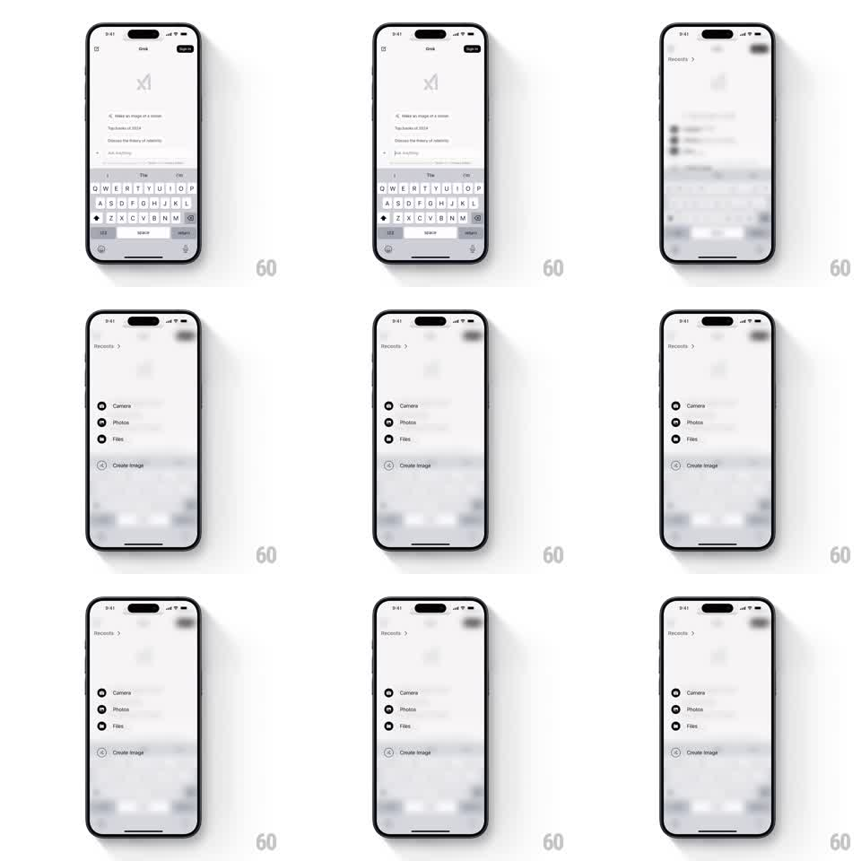

Media
Frame-by-frame

Rebuild this interaction 1:1: Grok's attachment menu - tapping plus dismisses the keyboard, blurs the chat behind, and slides the quick-action items in one by one.

Rebuild this interaction 1:1: Grok's attachment menu - tapping plus dismisses the keyboard, blurs the chat behind, and slides the quick-action items in one by one. ## Integration Integration: stack-agnostic spec - springs given as stiffness/damping, timed motions as duration + curve; map every value to your framework and animation library of choice. ## Scene Grok chat screen with the keyboard up. Menu state: a "Recents" header row with chevron, then Camera, Photos, Files, and a muted Create Image item - all floating over the heavily blurred chat. ## Motion spec Pattern: blurred-overlay menu with staggered items, ~500ms. - Tap plus: the keyboard slides down (250ms, ease-in) while the chat behind blurs and dims (300ms, ease-out), both starting together. - The "Recents" header fades in first (200ms), then Camera, Photos, Files slide in from the left with a 60ms stagger (each 300ms, 20px slide, ease-out). - Create Image arrives last, already at its muted opacity - it never animates to full strength. - Each row's icon pops slightly ahead of its label (scale 0.8 to 1, 150ms). - Tap outside or pick an item: rows slide back out right-to-left in reverse stagger (200ms), the blur lifts, and the keyboard stays down. ## Calibration - The blur ramps before the first item lands - items must arrive onto a settled backdrop. - The stagger is left-slide plus fade, uniform per row; no scaling of whole rows. ## Reduced motion Menu fades in over the dimmed chat; no stagger. ## Don't miss - Create Image is visibly dimmer than the others from its first frame - a disabled state, not a loading one. - The blurred background keeps the chat's colors readable as shapes; it is frosted, not blacked out.